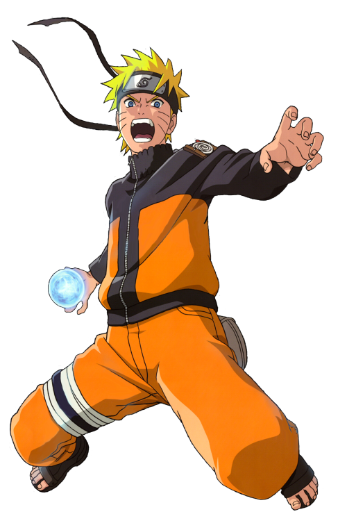

-
Naruto
HP 680
Descrição
Naruto Uzumaki é apresentado como um jovem rapaz louro, cabelos arrepiados e olhos azuis. Ele frequentemente veste uma jaqueta laranja. Após a sua graduação ninja ele começa a usar um protetor de testa que denota a sua posição como um ninja da Vila Oculta da Folha.
-
Sasuke
HP 675

Descrição
Sasuke é membro do clã Uchiha, que era uma habilidosa família de ninjas da Vila Oculta da Folha. Seu objetivo inicial é vingar a destruição de seu clã, matando seu irmão Itachi Uchiha, que assassinou quase todos sozinho. Inicialmente o personagem e descrito como frio, cruel, introvertido e guiado por sua vingança.
-
Sakura
HP 700

Descrição
Sakura inicialmente tem uma paixão por Sasuke, elogiando-o em cada situação, e acumulando desprezo sobre o menos qualificado Naruto. Ao longo da série, ela começa a criar uma personalidade compassiva e generosa, crescendo mais sensível e emotiva, aceitando e apoiando Naruto.